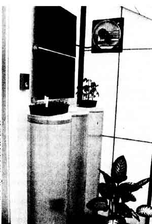
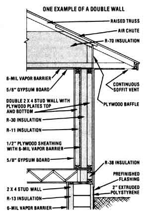

As most folks are well aware, an attempt to achieve a more self-reliant lifestyle often involves a good bit of problem solving . . . and much of the time, there just doesn't seem to be a ready supply of answers to the questions that come up. We're pleased to present, then, the following column . . . in which a number of well-known individuals from various areas of expertise (such as gardening, alternative building methods, hydroponics, water toxicity, and wood heating, to name a few) have agreed to act as "consultants" for you.
If a question concerning some aspect of selfreliant living has you stumped, send it to Ask Our Experts, THE Mother Earth News (restricted) 105 Stoney Mountain Road, Hendersonville, North Carolina 28791. Please don't expect personal replies, though. The most frequently asked questions will be answered here - and here only - so that we can all benefit from what these folks have to say.
I have some questions concerning solar greenhouse construction and operation. My sunspace is framed with 2 X 6's and has 6" of fiberglass insulation in the walls, five large double-paned windows gracing its south side, and five more double-paned portals on the sloped top. Particleboard lines the interior of the structure. My question concerns the amount of moisture that collects on the inner walls. Can you advise me as to the best way to protect the particleboard against moisture?
I could also use some input as to heatstorage techniques. I don't have the room needed to accommodate barrels of water, and I'm finding it difficult to obtain smaller vessels for storing the liquid. Do you have any suggestions?
A good preservative for protecting particleboard in a humid greenhouse environment is clear Cuprinol. This product won't harm plants or fish, but it is a light-duty coating and will have to be reapplied annually. (The heavier Cuprinol preservative contains copper naphthenate, which is detrimental to the health of plants and fish and thus is not suitable for greenhouse use.) Another option is to plug the pores of the particleboard with a sealer and then brush on a "porch and deck" enamel. When dry, this coating will not harm plants or fish.
In answer to your second question, there are various ways to add thermal mass to a greenhouse that has insufficient heat storage. If you haven't done so already, install insulation under either the floor or the ground-level growing beds. Put down 1" to 2" of extruded polystyrene, top that layer with a vapor barrier, and finally, add 4" to 6" of concrete for thermal mass. (In addition, be sure to insulate the sides of the slab.)
If standard oil drums are too large for your greenhouse, try using narrow (12" or 18") Kalwall tubes, which are fiberglass containers. These are available from Solar Components Corporation, Dept. TMEN, P.O. Box 237, Manchester, New Hampshire 03105 . . . or you can order a $2.50 pamphlet from the New Alchemy Institute (Dept. TMEN, 237 Hatchville Road, East Falmouth, Massachusetts 02536) that tells you how to build your own. For maximum heat absorption, you should dye the water a dark color (water dye is available from Solar Components Corporation). There are also a variety of plastic industrial containers that can easily be recycled as water receptacles. Do make sure that any scrounged container is airtight . . . and keep in mind that it's going to be exceedingly difficult to repair a leaky tub that's located on the lowest tier of your "water wall" if half a ton of liquid is balanced in vessels above it! Five-gallon containers are generally easier to stack than are smaller ones, though almost any receptacle will work.- Bill Smith.
Bill Smith is an energy-conservation specialist at the New Alchemy Institute.
My husband and I own a small homestead in southeastern Minnesota, and we plan to build a superinsulated passive solar home in the near future. Before making any definite plans for it, though, we need some advice. Rather than making the walls 10" thick using double studs and roll insulation, wouldn't it be cheaper, and the building just as well insulated, if we used 10" concrete blocks with vermiculite or foam insulation? I'd also like to know if this idea is safe, since I've heard that foam insulation might give off formaldehyde gas, which can cause various illnesses. Would those noxious fumes penetrate the concrete?
Another reason we've been considering using concrete blocks is that our summertime weather can bring tornadoes this way.
Once our home is built, we don't want it to be an easy challenge for twisters.
Given the building costs in your area, it's more cost-effective to build a doublestud wall (for double-stud wall construction, the insulation cost is 5 cents, and for concrete block, 9 cents, a square foot per R-value installed). As for potential outgassing, there's no measurable health hazard in using vermiculite or extruded polystyrene foam boards to insulate block walls. (Besides, a continuous vapor barrier on the interior side of the wall would prevent the products of such outgassing from becoming an indoor air pollutant in most cases.) However, the use of urea formaldehyde foam is a different story: Lingering formaldehyde vapors are a potential health hazard and may not always be contained by a conventional vapor barrier.
Now as for tornadoes, protection from these twisters can be achieved only by building below grade. . . but a double-stud wall (such as the one illustrated) is nonetheless a very sturdy structure and is unlikely to be blown over in a strong wind. [EDITOR'S NOTE: Turn to page 74 for more about protecting your home from natural disasters.]-Michael and Linda Scott.
Michael and Linda Scott, superinsulation pioneers who provide consulting services for numerous government, utility, and buildingindustry organizations, have just finished a new book, Superinsulation Design and Construction. For a description of their publications, products, and services, send a self-addressed, stamped envelope to Superinsulation Ltd., Dept. TMEN, RR 3, Box 18, Northfield, Minnesota 55057.
|
 PHOTO COURTESY OF SOLAR COMPUNENTS CORPORATION |
 |
|